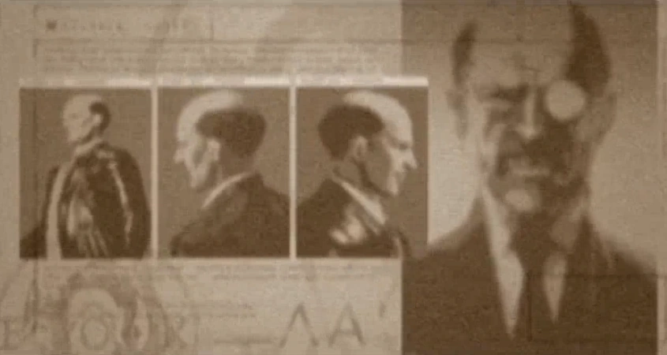
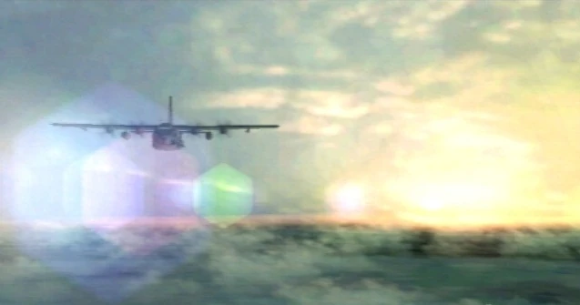
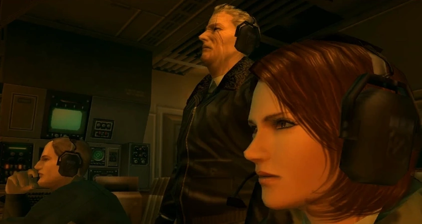

The Virtuous Mission was an infamous CIA operation in August of 1964 that
involved a deep insertion inside the Soviet Union. A FOX agent codenamed
Naked Snake was deployed via the world's first HALO jump in order to
rescue a Soviet defector, the weapons scientist Nikolai Stepanovich
Sokolov. While Snake succeeded in locating and extracting Sokolov from his
KGB guards, he was subsequently attacked and critically injured by a
defecting American agent. Sokolov was then re-captured, and the GRU
officer Volgin not only seized Sokolov's project, but also unleashed an
American-made Davy Crockett nuclear weapon on Russian citizens, creating
an international incident. The catastrophe of the Virtuous Mission was so
extreme that the CIA considered executing both Snake and his commanding
officer, Major Zero. They were saved only by the need for Snake to be
re-inserted a week later in Operation Snake Eater.

prelude
In 1962, a Soviet scientist by the name of Nikolai Stepanovich Sokolov
wished to defect to America. Sokolov was one of the Soviet Union's
foremost weapons developers and head of the OKB-754 Design Bureau. Sokolov
also requested that his family also defect to America. The man in charge
of the operation was David Oh, a British-originating CIA member. The CIA
successfully managed to sneak Sokolov's family over the Berlin Wall, and
then Sokolov himself, although Sokolov himself ended up exhausted from
traveling over 800 km (500 mi) during the two-week journey and was checked
into a hospital to recover.


However, on October 16, 1962, President John F. Kennedy received word that
the Soviets were in the process of deploying intermediate-range ballistic
missiles in Cuba. The President demanded that the Soviets dismantle and
remove the missiles immediately. At the same time, he announced a naval
blockade to prevent further missile shipments from reaching Cuba. But the
Soviets didn't back down, instead placing their armed forces on secondary
alert. Soviet transport ships carrying missiles continued on course toward
Cuba. U.S. and Soviet forces went on alert for an all-out nuclear war.
Frantic negotiations were conducted through the U.N.'s Emergency Security
Council and unofficial channels to end the hair-trigger standoff. Finally,
on October 28, the Soviet Union agreed to remove its missiles from Cuba.
And so the world avoided a nuclear holocaust. This incident became known
as the Cuban Missile Crisis.